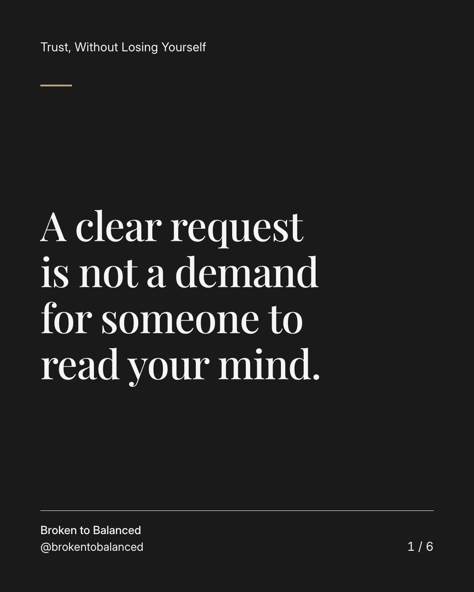
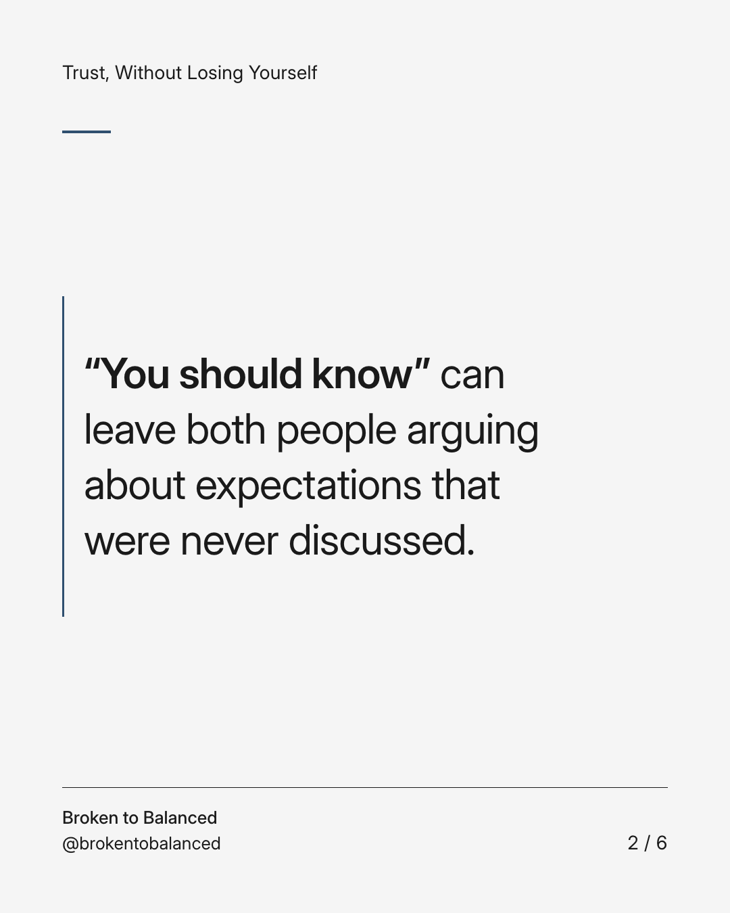
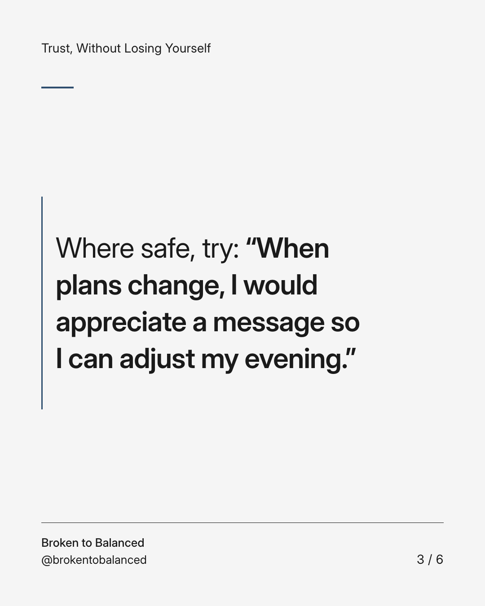
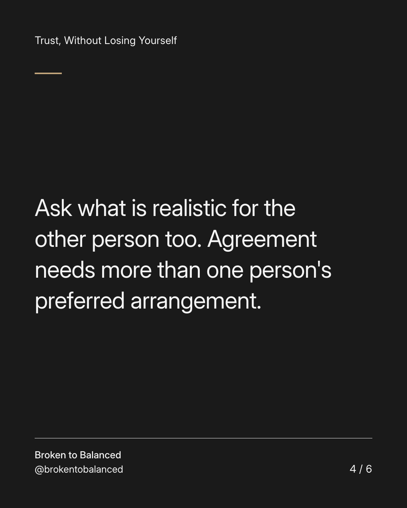
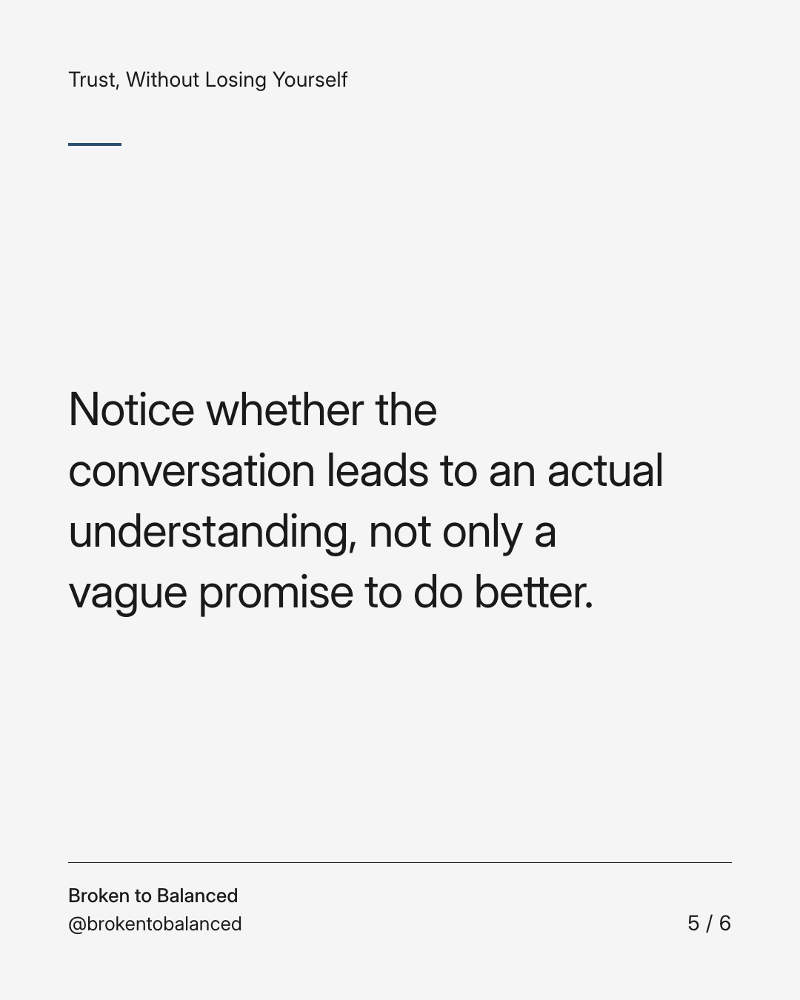
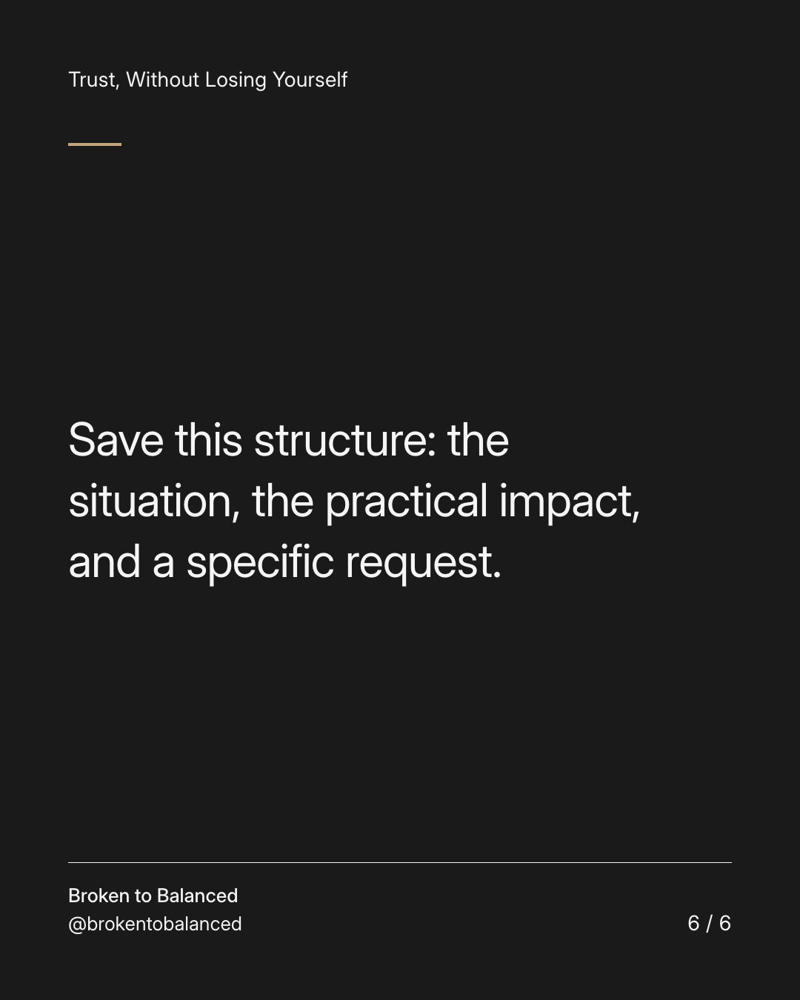

Exact text and accessibility text
A clear request is not a demand for someone to read your mind.
Slide 1 of 6. A clear request is not a demand for someone to read your mind.


Exact text and accessibility text
“You should know” can leave both people arguing about expectations that were never discussed.
Slide 2 of 6. “You should know” can leave both people arguing about expectations that were never discussed.


Exact text and accessibility text
Where safe, try: “When plans change, I would appreciate a message so I can adjust my evening.”
Slide 3 of 6. Where safe, try: “When plans change, I would appreciate a message so I can adjust my evening.”


Exact text and accessibility text
Ask what is realistic for the other person too. Agreement needs more than one person's preferred arrangement.
Slide 4 of 6. Ask what is realistic for the other person too. Agreement needs more than one person's preferred arrangement.


Exact text and accessibility text
Notice whether the conversation leads to an actual understanding, not only a vague promise to do better.
Slide 5 of 6. Notice whether the conversation leads to an actual understanding, not only a vague promise to do better.


Exact text and accessibility text
Save this structure: the situation, the practical impact, and a specific request.
Slide 6 of 6. Save this structure: the situation, the practical impact, and a specific request.
Exact caption
Plain-text fallback: select and copy the caption.